Demo Video
VR Therapy DemoStory Board
VR Therapy Story BoardProject Details
The project we chose to take on is Virtual Therapy. In this virtual app individual’s can talk to their therapist virtually. In order to do this they will need to join a room by first choosing a setting, and then send the room id to the therapist so that they can join. Once they do this the room will load in with the environment chosen and both users will be in the room itself. From there, voice proximity chat will be enabled once the users give permission to allow the program to access their microphone. Now, both the user and the therapist are free to talk and look around their surroundings in the comfort of their own home while also remaining anonymous.
How and why we came up with it
We initially started by coming up with 10 ideas among ourselves and drawing our own implementations of it. After discussing amongst ourselves we came up with this idea while talking about activities you do with others that you may want to do from your home. With virtual therapy being a way for 2 people to communicate and collaborate online, we decided to go with it. It also meant that we were adding a whole new element to therapy as not only will you be able to do it from where you want to, but you will also be able to be more comfortable knowing you can be anonymous and the therapist can’t actually see you. While that is how we came up with the main idea for the program, we decided to add multiple settings from which the user can choose so that they can be even more comfortable by choosing a setting of their liking.
Detailed Sketches
As we shifted our focus to VR Therapy, we came up with 10 detailed sketches to develop the idea. Since part of the theme was supposed to be communication, we instantly started thinking about the appearances of patients and therapists during the session. We decided to go with the simple blue spheres with eyeballs since they are easy to see from far away and work well for anonymity. It’s a pretty cool project so we were excited to make our own scene each for patients to select from for their VR Therapy experience. These scenes include: Forest, Winter, Office and Beach. 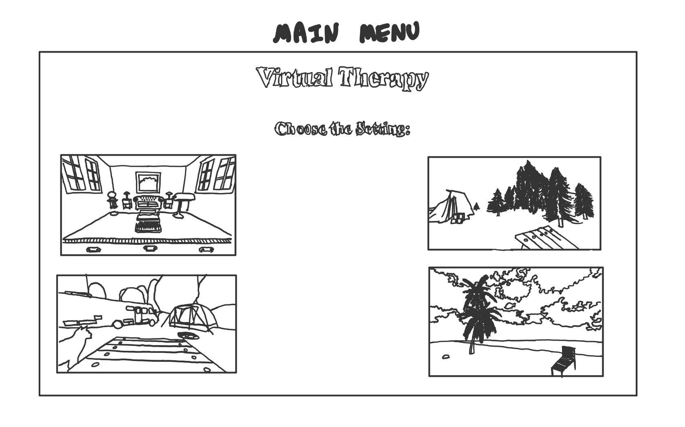
{kind=link}
Upon discussion we had to figure out a simple and clear way for users to pick their desired therapy setting. After discussing different implementations we ultimately decided that a simple main menu screen in which the user can visibly see a snapshot of the various settings to pick from seemed most appropriate.
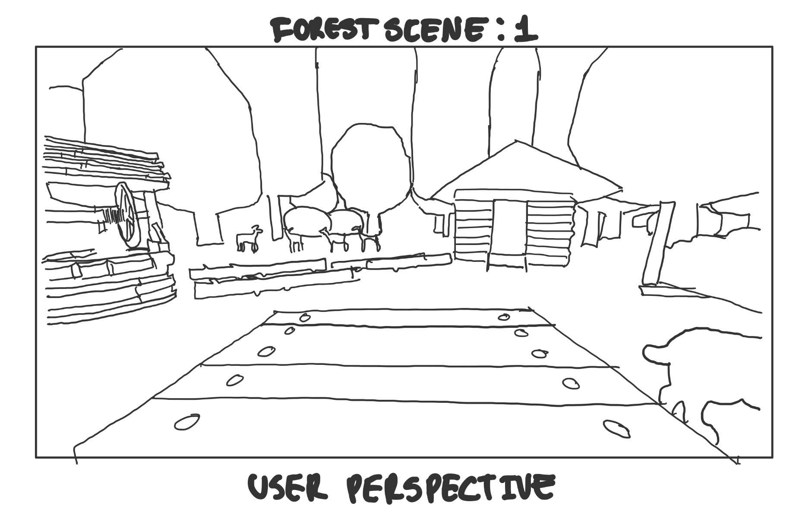{kind=link}
One of the settings we wanted to create was a forest scene. Within our forest environment we wanted to create a scene representing a campsite as we believed that it's common for people to go camping to relax and get away from the hustle and bustle of city life! We added an animated dog because who doesn't love dogs? Aswell as deers eating in the background because what's cuter than that. This sketch depicts the possible perspective of the person who is seeking therapy sitting on the bench surrounded by the forest environment.
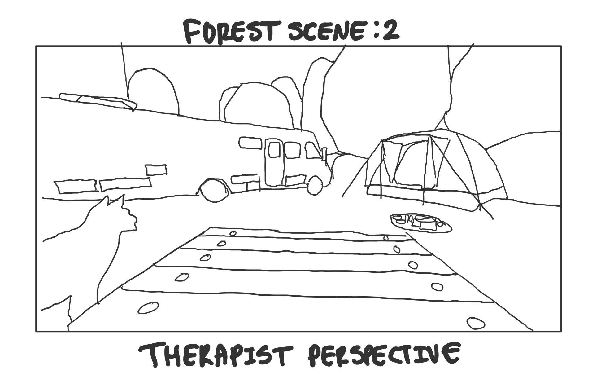{kind=link}
This is a sketch of the potential opposite perspective of the person giving therapy sitting on the bench surrounded by the forest environment.
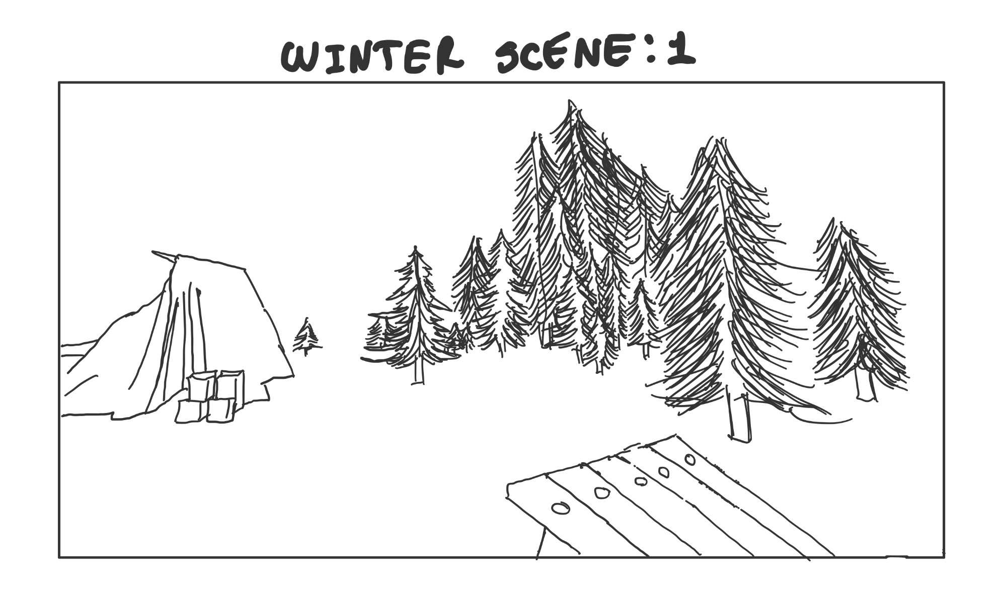{kind=link}
We acknowledged that we needed to create settings that would be distinct and unique from each other and that for some people, their happy place is a bleak and quiet setting. We believed it could be represented by a rural winter scene. This scene is vast and empty, there's no life and civilization for kilometers and this is the ultimate form of privacy that could allow some people the opportunity to express themselves in a way that they wouldn't do otherwise. This sketch is from the potential perspective of either the therapist or the person seeking therapy. There is the option to move around the snow, stare off into the blank winter or sit on the bench.
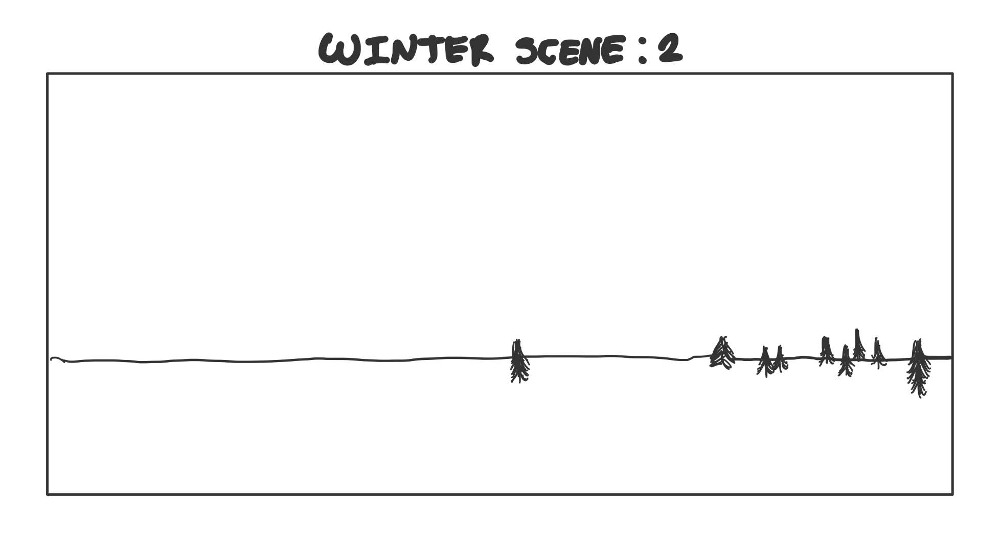{kind=link}
This is an alternative perspective of the winter setting, specifically drawn to emphasize the potential bleak and vast scene we are trying to create for the client.
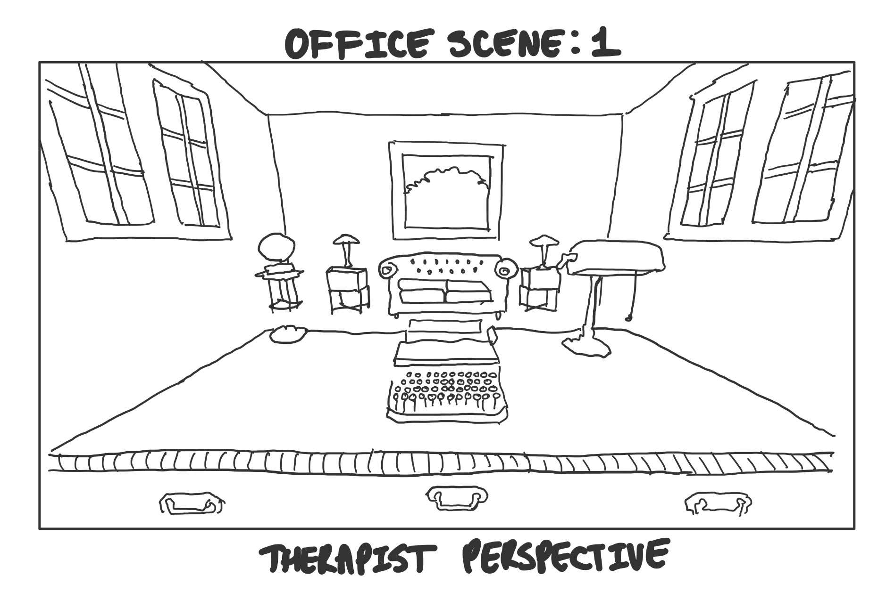{kind=link}
Although the beauty of virtual reality is the ability to create environments either imaginary or impractical to create/reach, we do understand that there is already a large population of people that have already participated in traditional therapy. This traditional therapy usually takes place in an office environment, and since this is a common place for therapy, this could be the safe space needed for a large majority of users to feel comfortable enough to talk things out. Therefore, we had to include a traditional office environment. This sketch depicts a traditional office, stylized in vintage furniture.The sketch shows the perspective of the person giving therapy sitting on a leather chair, facing towards a couch where the client would sit.
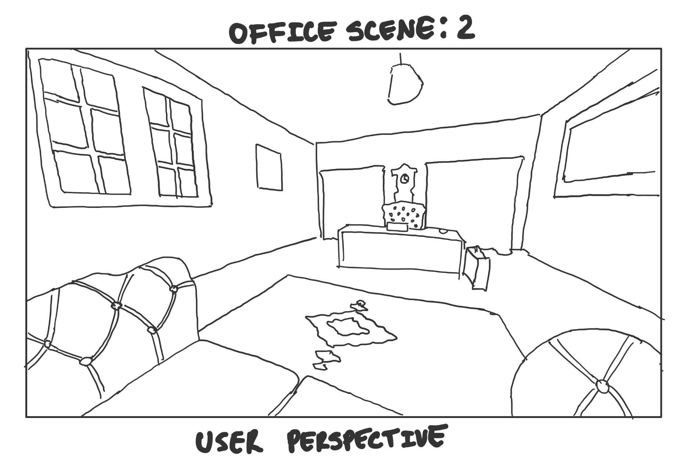{kind=link}
This sketch depicts an alternative perspective of the person who is seeking therapy sitting on the leather sofa, facing the therapist, surrounded by various items which would be in a typical office.
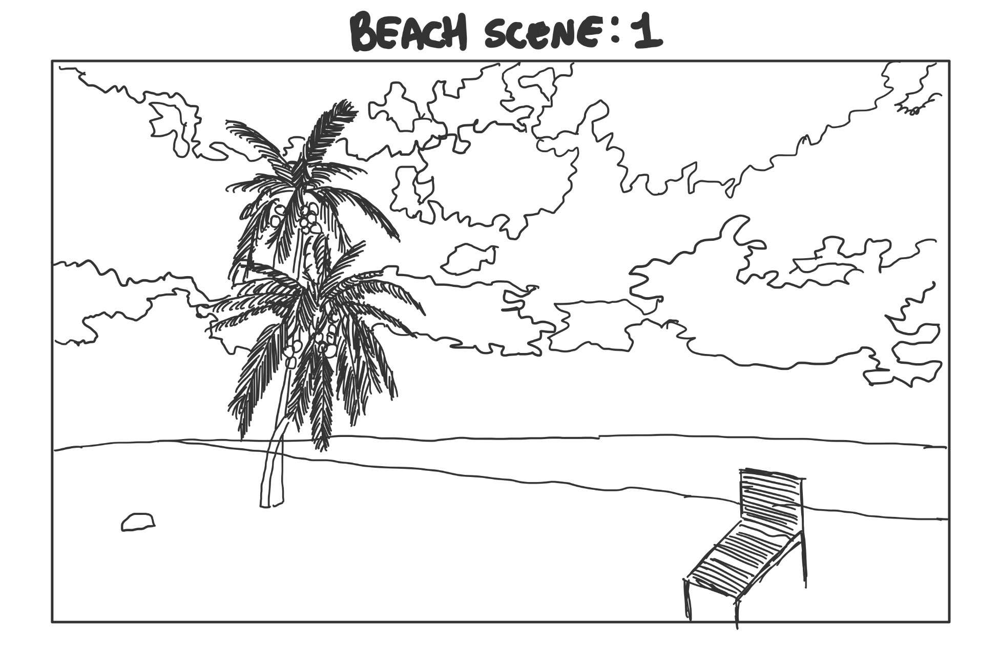{kind=link}
As mentioned previously, we had to consider that there would be a vast variety of individuals seeking therapy with different “Happy Places”. While some people need privacy to feel comfortable to express themselves, some people are the complete opposite. For some people an office isn't somewhere they feel happy at, maybe they have worked a full time office job for years and that is the source of their stress and anxiety and they just want to get away from that. Since we already created a winter theme and a vegetation heavy forest environment we thought that for our fourth and final setting what better than to have a beach scene! What better place to kick back, relax and get a tan, throw a volleyball or build a sandcastle. This sketch depicts this potential beach environment with a palm tree and bench to relax on.
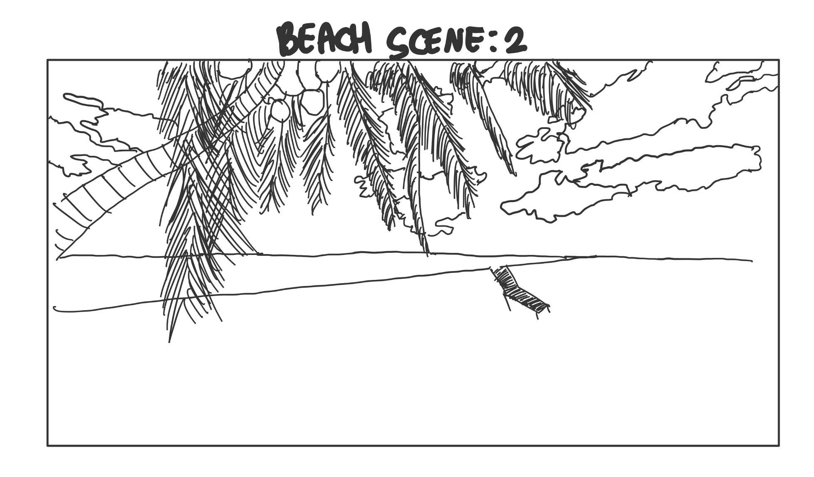{kind=link}
This sketch depicts an alternative perspective of the beach, showing how the beach would look from a different angle. This sketch serves to present the vastness of the beach, as a small beach might feel claustrophobic.
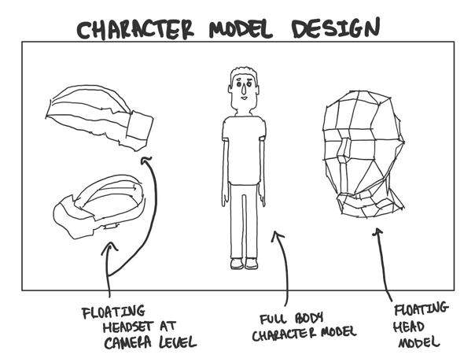{kind=link}
After implementing multiple users entering the therapy scene, we had to make one of the most important decisions as to how to represent the user/therapist. We narrowed the options down to three options. The first option was to include floating headsets that would be positioned at the same height as the camera view of the character. However, we ultimately decided against this option as after implementing it, the headsets were somewhat difficult to see, especially on levels/portions of the various scenes with darker lighting. The second option we discussed was a full character/avatar model that could be customized by the users entering a scene. Again, we ultimately decided against this design as programming non-static models that would move their legs/hands was deemed “out-of-scope” as it would require substantial time and resources to create. The final option which we opted to use was a head model that would also be positioned at eye-level of the user's in-scene camera perspective. This option seemed the best as the head model was clearly visible whilst remaining reasonable to implement.
Concept Sketches
In order to decide how we can make users communicate and collaborate with each other we each had initially come up with 10 designs each. Out of all the ideas we came up with we eventually decided to go with the virtual therapy idea as it is an innovative way for individuals to talk to therapists while remaining in the comfort of their own home. This also allows users to remain anonymous so that they’re able to talk without worrying about people judging them.


 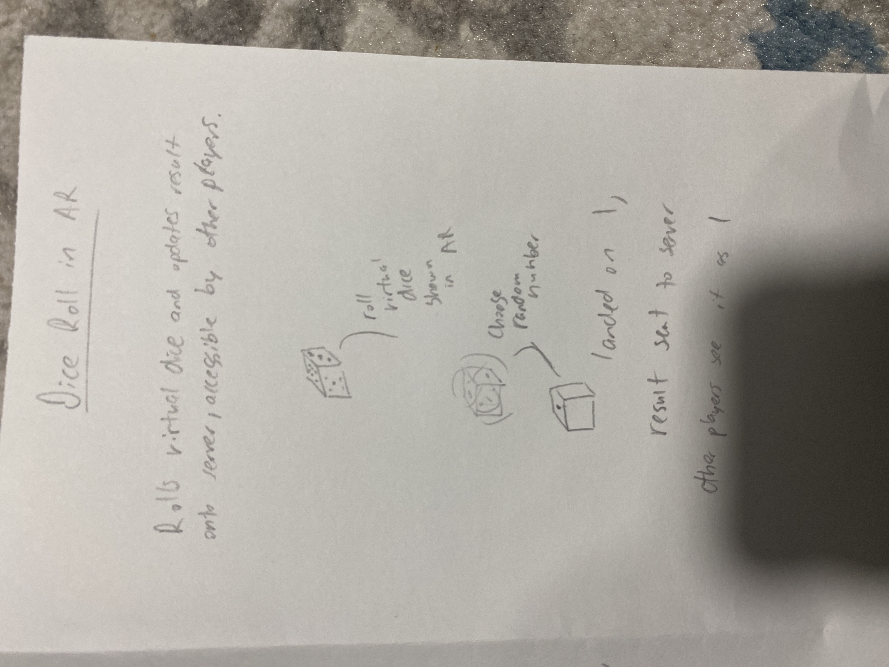
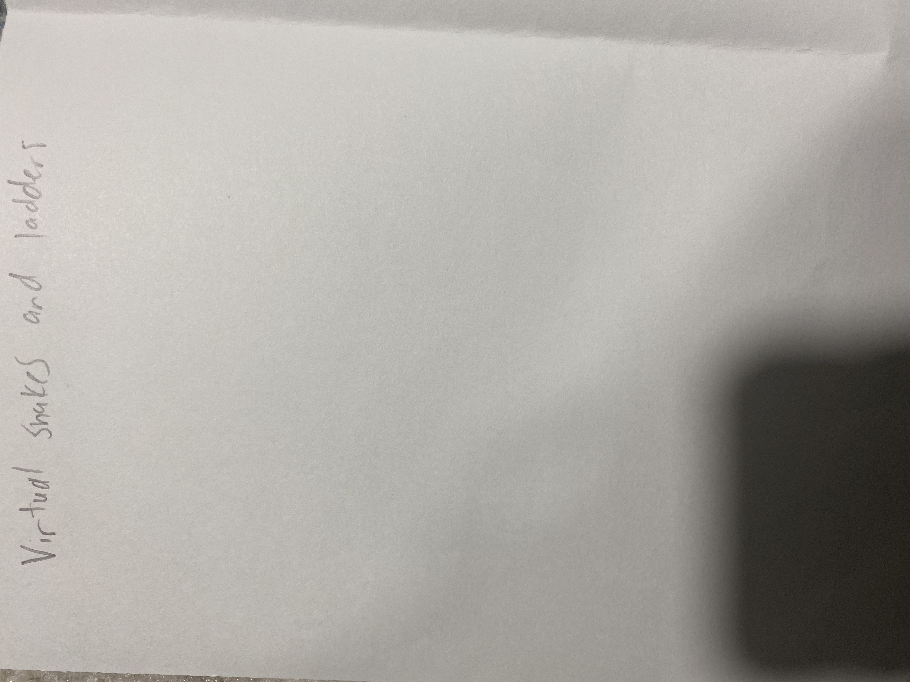
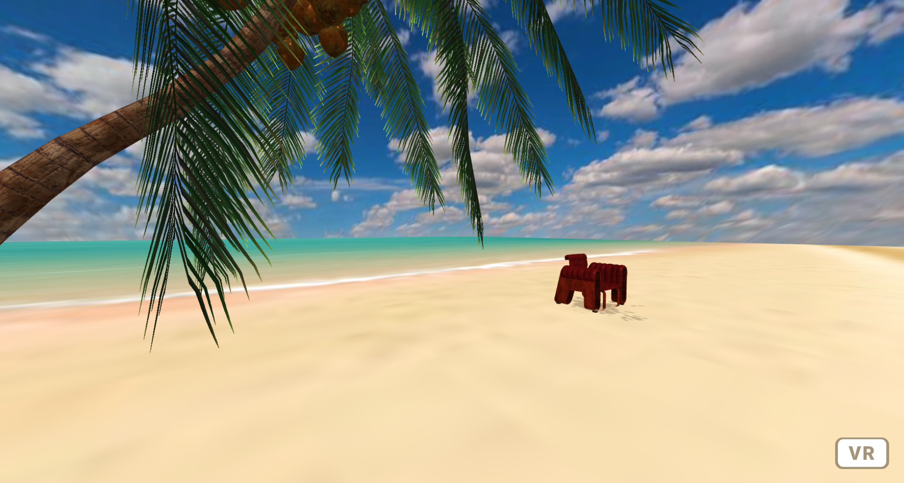
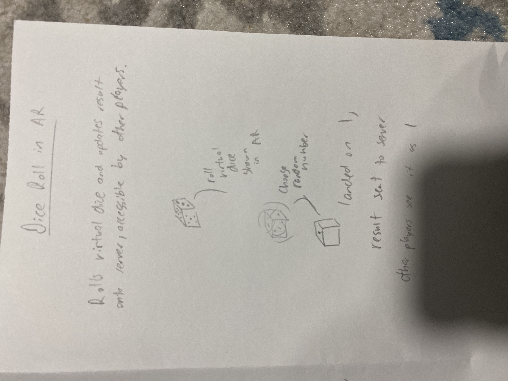
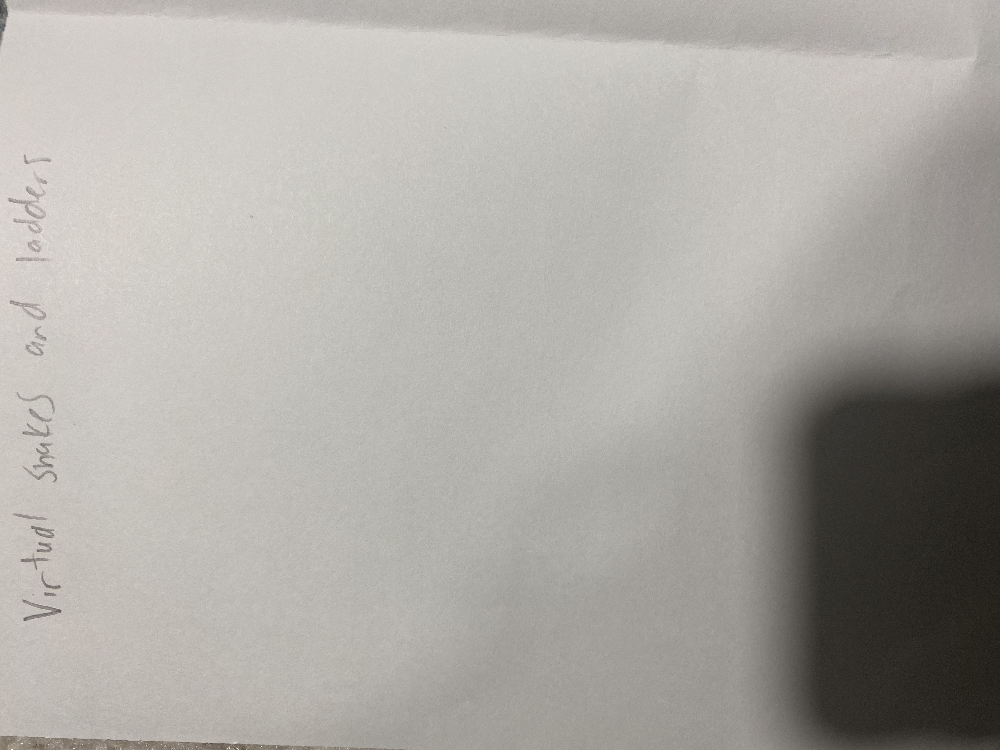
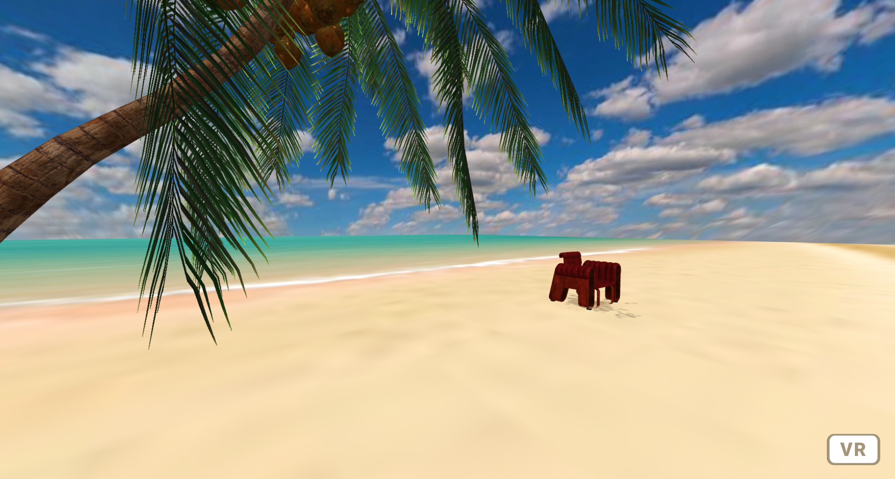
{kind=link}
{kind=link}
{kind=link}
My Contribution
We discussed our ideas and made sketches which we sent to the group. I slowly helped develop the therapy idea and helped integrate my code. Most of my code contribution was in the beach scene. I also helped record the video and helped with the project documentation.
Limitations and Issues
Since anyone with the link can access the session, this isn’t really secure. Multiple people being able to join at any given time adds to this limitation, because therapy is personal and the session is meant to be anonymous. The session otherwise works well, allowing the user to pick an environment of their choosing and meet up with, ideally, a therapist. Another issue we had was with the complexity of our VR environments as we started adding more models. We quickly learned that adding complex models with too many triangles and vertices makes the session lag. This limited us in our ability to add many more models and/or nicer models too large/complex for our computers to run smoothly. An example of this is the forest environments animations that stopped working after we integrated newer server communication code. We also have a minor issue where the user is able to travel off map and through walls. We didn't end up with enough time to deal with this issue but it's okay because it doesn’t have a significant impact on the apps function. The last limitation I’ll discuss is our inexperience with A-Frame. It was fun and cool to learn, but without a good understanding of common practices and conventions, we made lots of time consuming mistakes during development. It was all-in-all a great learning experience.